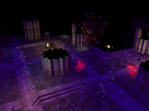
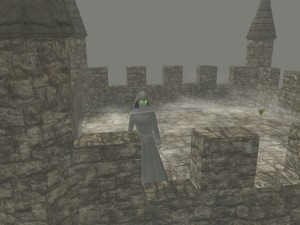
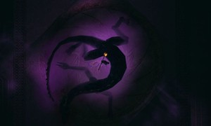

The Story So Far
Chapter 1: Trapped Beneath the World
We have swallowed the Sanctuary Below, but we shall never consume it. There shall be a reckoning of steel and blood, should we not turn back from this dire course which we have set ourselves upon.– Councilor Albert Ubel, “Liberty Amidst the Coming Darkness”, Year 104
 Escape from the Underdark began in the autumn of 2005 as an attempt by the founding DM team to produce a high quality persistent world with a rich history that would reach new heights of storytelling, intrigue, and conflict. The focus of the world was based in the town of Sanctuary, located some seven miles beneath the earth's surface. Populated by quarrelling groups of escaped slaves and their descendants, a major aspect of the server focused around the desire to escape from the Underdark and make it to the surface above. It was a place of hope and haven against the darkness.
{kind=link}
After years of plots and intrigue that exceeded our highest expectations, at last the story of Sanctuary came to a crashing end. Years of simmering conflict between different groups led to anarchy and rebellion. Rebellion and unrest split the town into different warring groups, until at last the conservative Order of the Spellguard and their followers retreated into their magically sealed tower. Elsewhere in the Underdark, a new Drow Noble House took control of Traensyr and a new super weapon creature was made available to the dread illithid of the Mindflayer City of Ysinode. Worst of all, the ancient and monstrous Appetite of Dunwarren was awoken by the loathsome Chosen wererats aided by their human allies. Faced against such impossible odds, what was left of Sanctuary soon fell amidst blood and tears.
But even as the villains of EFU brought about its end, its heroes were struggling to embrace salvation. Ancient gates were opened and a dangerous Way upwards was discovered, even as monstrous evils were awoken and the forces of Sanctuary’s enemies began their invasion. As the town fell, some escaped and managed to survive. These fortunate survivors sought exodus through the gates of the discovered Way towards the surface above.
Far above the dark and dreary caves of Dunwarren, the Island of Ymph seemed a beautiful paradise to the first few blinking survivors who made it to the surface. An ancient and seemingly empty ruin located along the coastline seemed an ideal place to found a new home. Yet as darkness fell, it soon became clear that all was not so pleasant as it seemed.
Chapter 2: Here, o’er Old Netheril
This ruin, though crumbled and fetid, shall in good course become our home; thus it shall be. Rest well, friends, and prepare for the work to come.– Asdon Garlin, historian, 1375 DR.
 Escaped from the Underdark: Archipelago was the story of those who survived the bloody exodus from Dunwarren and were soon greeted by the harsh realities of existence upon the Isle of Ymph. The survivors of Sanctuary were not alone, for not long after they arrived the mysterious Netherese Mythallar began teleporting in denizens from every corner of Faerun. Not many made it past their first few days upon Ymph. The wilds were harsh, and the curious ruins from Old Netheril — and civilizations that preceded even they — claimed yet more of them.
{kind=link}
The next few years were a time punctuated by alternating prosperity and disaster. The ruins of Nebezzdos, and the settlement that sprang up there, endured colonization at the hands of the Old Port merchants, House Sharboneth, and later Duke Antoine Trenada, under the watchful eye of the mysterious Count Zarono Senuspur of Old Port. Groups which had previously clung to the forests and shadows began to take on new importance, The Numinous Order foremost among them. Other groups coalesced into being in the fledgling village, such as The Transcendent Conclave, led by their boy Oracle, dedicated to the Old Ways of Netheril, and the protection of and from the Weave.
The island of Ymph and the Shrouded Archipelago was a place of high adventure and boundless opportunity for evil and good deeds alike. With the lich H’bala imprisoned in her tower, vying for freedom, and the mysterious Crown of the Isles promising glory and power to any man who found it, hundreds found themselves unable to resist the lure of adventure upon the mysterious Archipelago.
In the end, the evils of this sunny island home also proved too much for its inhabitants. A great gathering of druids and wildsmen descended into the Tower of H’bala with the intent of destroying her, but in their folly were themselves tricked and destroyed, and so the lich was released. In the wake of her terrifying homecoming, the island underwent terrible, cataclysmic changes. The Transcendent Conclave’s assault upon her tower was rebuffed and its floating towers were sent veering off to the eastern deserts of the island. With the Conclave’s anti-undead shield no longer warding the ruins of Nebezzdos, the skeletal Nightrisers rose, and, in a final, massive assault, succeeded in awakening their ancient Warden from his amnesiac confusion, and driving the living from their home.
Chapter 3: A Shrouded Home
Seven daughters, seven sons.
Seven seasons, ’ere she comes.
Seven tidings, fear and dread.– Doggerel found on a table in the Mist’s End Tavern.
 After three years of misty slumber, the adventurers of Ymph awoke to discover their island home had been dramatically changed. The lich H’bala had cursed the island with a terrible affliction so as to cause life to slowly slip into unlife, and the living were forced to find refuge in the hamlet of Mistlocke deep in the forests of the far eastern end of the island.
{kind=link}
For years, the bold of Mistlocke battled H’bala’s undead monstrosities, endured her Withering Curse, defended against manifold other dangers, and worked to preserve their home. Many also sought to understand the secrets of the island and interpret the apocalyptic warnings of those who came before. Eventually, the actions taken by the inhabitants of Ymph reached cosmic significance when the Transcendent Conclave, under the rulership of its oracle, succeeded at last in concluding a triumphant ritual. Unbeknownst to most of its members, however, the ritual’s primary purpose was not the undoing of H’bala but rather to reverse the consequences of ancient Karsus’ folly and replace the goddess of Magic, Mystra, with the resurrection of ancient Mystryl.
The floating Enclave of the Transcendent Conclave was utterly destroyed in the triumph, and so was the Red Star of Mystryl born. No longer was magic watched over by a careful guardian; no longer was the power of magic kept limited. The birth of the Red Star would usher in an era in which the very foundation of the cosmos could and would be shaken to its core.
As H’bala’s slow and creeping conquest of Ymph seemed all the more inevitable, and apocalyptic cults warned darkly of the doom to come, some were driven to ally with the Nightrisers of Nebezzdos and pursue the mysterious “Seven Steps of Sanq.”
Events rapidly reached a feverish pace on Ymph as it seemed the fate of the island was soon to be resolved. The Crown of the Isles was found and a youth was proclaimed King. The Imperator-Warden of the Nightrisers was destroyed, only for the vampiric Lord Barakat and his loyal servants to continue upon the path of the Seven Steps. A volcanic eruption covered Ymph in consuming rivers of flame. The Numinous Order marched against H’bala, with their dead rising miraculously from the Lake, yet were sent scattered in dismay following the assassination of their Grandmaster. The Mists surged, and the Last Keep of Mistlocke was sent locked into the Mists by the boy-king Owain, leaving the remaining population of Mistlocke alone to face the coming storm.
War between the forces of H’bala, the living, and the Nightrisers raged across Ymph, until, in the end, Mistlocke was left a broken ruin. H’bala’s tower was destroyed and her soul captured and imprisoned. Yet, the Doom Tree, the source of the Withering Curse, remained, leaving Ymph a cursed and lifeless place.
As the withered refugees of Ymph fled to a quarantined zone of Old Port, the Mortals of Sanq continued their pursuit of the Seven Steps to completion. The primordial evil Dendar, Maiden of the Night, was awoken, and so at last came about a long prophesized End. The sun was devoured, and with the coming of the Endless Night the Dread Empire of the Illithid surged with their enthralled armies to conquer the surface realms.
Chapter 4, “Escape from Uncertainty: Revelations”
Apocalypse has truly arrived. The sun has been devoured by the primordial Night Serpent Dendar. The Gods have been thrown into disarray and fatal weakness by the inexorable hunger of the primordial. Great powers have been reduced to whispers upon the Astral Plane in her wake. The far stars shine sickeningly bright upon a darkened wasteland of broken kingdoms, the life that yet remains slowly changing under their baleful influence. The servants of the Dread Illithid Empire roam the barren surface; their masters seeking to dominate all intelligent life, to remake the multiverse in their terrible image.
In the shrouded Archipelago, the Netherese Nightrisers brood in their ancient home, largely indifferent to the doom they were so instrumental in releasing. Although the lich H’bala is no more, the island of Ymph remains in memory of her: a lifeless, cursed place populated only by her creatures.
And yet, deep in the darkness, a settlement of free people endures.
The Reformed Order of the Spellguard, their magic heightened and their mastery over the ancient Machine of Dunwarren strengthened, have flung open the doors of their warded Tower, promising behind their shield a sanctuary for all sentient life that remains upon Faerûn.
Your Sanctuary.